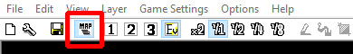
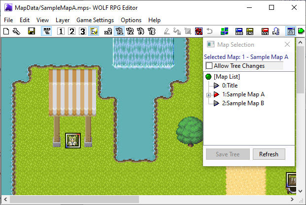

[Goal]
Open "Sample Map A" from the Sample Game and display it
in the main editor window.
| [1] Click the Map Selection |
 |
| [2] Switching maps A window like the one on the right will appear. The red triangle shows which map is currently being edited. Click the map you want to open, such as "1: Sample Map A". |
 |
| [3] Great work! You have successfully switched maps! ※ Tip: After making any changes, remember to click the Save don’t lose any progress. → Creating your first event ← Installing WOLF RPG Editor |
 |